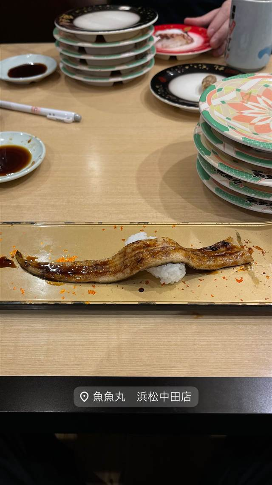

野焼
1976年創業、昭和の趣で味わう甘めの煮魚
野焼
大井町駅すぐの「野焼」は1976年創業の老舗居酒屋。甘めに炊いた煮魚や新鮮な刺身が名物で、昭和の雰囲気を残す店内で地元客に長年親しまれている。
TRIVIA
へえ、という話
- 2019年時点で創業から43年、地元で長年愛される老舗居酒屋
| 創業 | 1976年創業 |
|---|---|
| 看板 | 甘めの煮付け、鯛の兜煮、鰈の子の煮付け、鯨など珍しい刺身。 |
| こだわり | やや甘めの味付けで炊いた煮魚が看板。 |
| 予算 | 夜 ¥6,000～¥7,999 |
| 定休日 | 月曜 |
| 場所 | 大井町 東京都品川区大井1-8-4 |
| 注意 | 大井町駅C口から徒歩1分。昭和レトロな雰囲気の老舗居酒屋。 |
食べたもの：煮魚と刺身
NEARBY
近い店・同じ系統の店
-
 ★
二郎系(インスパイア) 大井町
ザ・ラーメン スモールアックス
二郎系なのに麺量250gと少なめで食べやすい一杯
昼 ～¥999 夜 ～¥999
★
二郎系(インスパイア) 大井町
ザ・ラーメン スモールアックス
二郎系なのに麺量250gと少なめで食べやすい一杯
昼 ～¥999 夜 ～¥999
-
 ★3
二郎系(インスパイア) 大井町
のスた 凛本店
二郎目黒店とさぶちゃんの技を融合した独自の一杯
昼 ¥1,000～¥1,999 夜 ¥1,000～¥1,999
★3
二郎系(インスパイア) 大井町
のスた 凛本店
二郎目黒店とさぶちゃんの技を融合した独自の一杯
昼 ¥1,000～¥1,999 夜 ¥1,000～¥1,999
-
 コーヒー 大井町
PARK COFFEE
東急の廃車両や旧駅の廃材を再利用した公園のようなコーヒースタンド
昼 ～¥999 夜 ～¥999
コーヒー 大井町
PARK COFFEE
東急の廃車両や旧駅の廃材を再利用した公園のようなコーヒースタンド
昼 ～¥999 夜 ～¥999
-
 そば 大井町
中華そば 永楽
創業から食器も味も変わらぬ、70年続く町中華のもやしそば
昼 ¥1,000～¥1,999 夜 ¥1,000～¥1,999
そば 大井町
中華そば 永楽
創業から食器も味も変わらぬ、70年続く町中華のもやしそば
昼 ¥1,000～¥1,999 夜 ¥1,000～¥1,999
-

海鮮料理 浜松 魚魚丸 浜松中田店 まぐろ解体ショーも見られる静岡県初出店の回転寿司 昼 ¥2,000～¥2,999 夜 ¥2,000～¥2,999 -
 海鮮料理 恵比寿駅
門（もん）
天候や海流を見極めて仕入れる旬の魚介と日本酒
夜 ¥5,000～¥5,999
海鮮料理 恵比寿駅
門（もん）
天候や海流を見極めて仕入れる旬の魚介と日本酒
夜 ¥5,000～¥5,999